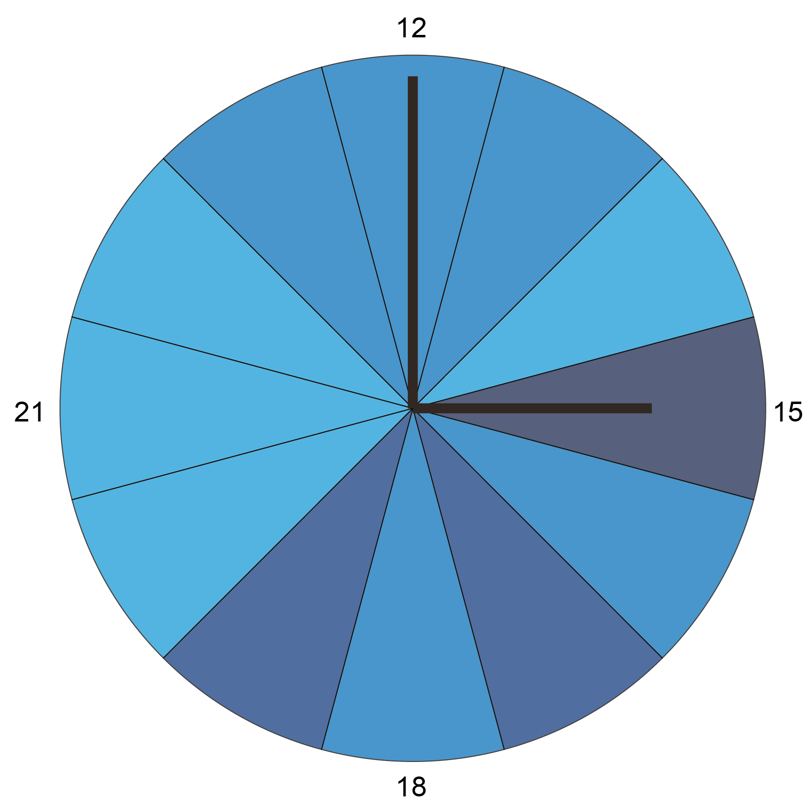

Internet Speed
What up to 100 Mbit/s really means
BY Jan Strozyk
Published August 01, 2018
If you ever happen to need a reliable, fast internet connection, don't come to my place on a Thursday in January. Chances are that the Wifi will be terribly slow - even though my provider promised up to 100 Mbit/s of download speed. Data shows: the actual speed is consistently lower throughout the year.
AM
Average connection speed by the hour of the day: TThe best time to surf the web in the morning is 11 am.

PM
Average connection speed by the hour of the day: The best time to surf the web in the morning is 11 am.

NOTE: an optional note or source can go here.
SOURCES: Sourcename here (left and right); Second sourcename (center)
Subhead
Etiam porta sem malesuada magna mollis euismod. Aenean lacinia bibendum nulla sed consectetur. Nullam quis risus eget urna mollis ornare vel eu leo. Integer posuere erat a ante venenatis dapibus posuere velit aliquet. Fusce dapibus, tellus ac cursus commodo, tortor mauris condimentum nibh, ut fermentum massa justo sit amet risus. Duis mollis, est non commodo luctus, nisi erat porttitor ligula, eget lacinia odio sem nec elit. Nullam quis risus eget urna mollis ornare vel eu leo.
sus eget urna mollis ornare vel eu leo. Integer posuere erat a ante venenatis dapibus posuere velit aliquet. Fusce dapibus, tellus ac cursus commodo, tortor mauris condimentum nibh, ut fermentum massa justo sit amet risus. Duis mollis, est non commodo luctus, nisi erat porttitor ligula, eget lacinia odio sem nec elit. Nullam quis risus eget urna mollis ornare vel e
18 months of slow internet
This chart shows the average internet speed for every day back to December 2016 - well almost every day. There was an incident involving the physical test set-up (a mini computer that lives in a shoe box under the couch) and a vacuum cleaner in April this year. Unfortunately, I did not notice for a while. Every box represents one day, the darker the lighter the color, the slower the connection speed on this day.

NOTE: an optional note or source can go here.
SOURCE: Sourcename here
Etiam porta sem malesuada magna mollis euismod. Aenean lacinia bibendum nulla sed consectetur. Nullam quis risus eget urna mollis ornare vel eu leo. Integer posuere erat a ante venenatis dapibus posuere velit aliquet. Fusce dapibus, tellus ac cursus commodo,
tortor mauris condimentum nibh, ut fermentum massa justo sit amet risus. Duis mollis, est non commodo luctus, nisi erat porttitor ligula, eget lacinia odio sem nec elit. Nullam quis risus eget urna mollis ornare vel eu leo.
Average speed by week
The chart shows the weekly average over time. There are significant ditches in April and October 2017, the reason for that is not immediately clear to me. Keep in mind that I was actually promised up to 100 Mbit/s once. The line never comes even close to that value.
Etiam porta sem malesuada magna mollis euismod. Aenean lacinia bibendum nulla sed consectetur. Nullam quis risus eget urna mollis ornare vel eu leo. Integer posuere erat a ante venenatis dapibus posuere velit aliquet. Fusce dapibus, tellus ac cursus commodo,
tortor mauris condimentum nibh, ut fermentum massa justo sit amet risus. Duis mollis, est non commodo luctus, nisi erat porttitor ligula, eget lacinia odio sem nec elit. Nullam quis risus eget urna mollis ornare vel eu leo.